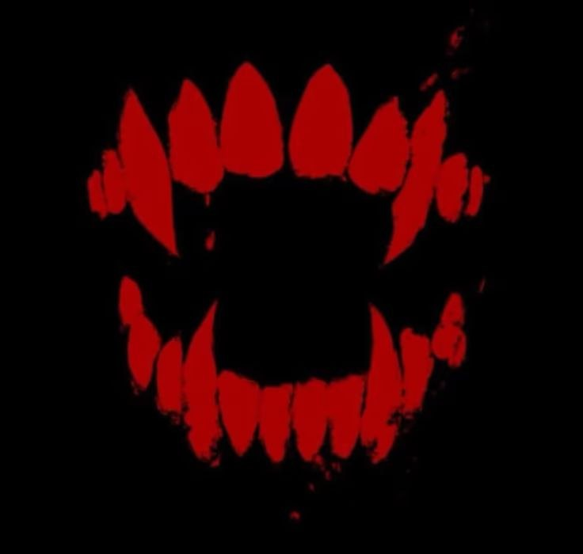

TPPСтатус: Древнейший. Глава Династии и основатель Ордена.
Клаус — это концентрация чистого опыта и мастерства. Его сила находится за гранью понимания обычного игрока. Пока другие изучают стили и комбинации, Клаус ими управляет.
Его мастерство невозможно измерить стандартными мерками. Клаус не адаптируется под врага: он заставляет любого противника, независимо от его статуса и «топа», играть по его правилам, пока тот не совершит фатальную ошибку. Он — тот, кто стоит на вершине пищевой цепочки.
Статус: Обращен лично Клаусом. Главный стратег и второй по могуществу в иерархии.
Сила Демиурга заключается в безупречном структурировании боя. Если Клаус — это абсолютный скилл, то Демиург — это абсолютная тактика.
Его боевой уровень находится вне досягаемости обычных сильных игроков. Демиург «читает» любого топера. Пока враг полагается на агрессию или скорость, Демиург методично разбирает его защиту, находя бреши там, где их не видят другие.
Статус: Обращен Демиургом. Хладнокровный исполнитель и мастер надзора.
Сила Нихила — это хладнокровие. Он лишен эмоций в бою, что делает его самым стабильным и опасным «техником» Ордена.
Нихил не делает лишних движений. Он мастер «фрейм-перфекта» (идеальных таймингов). Именно Нихил доводит навыки Всадников до совершенства, выжигая в них любые проявления слабости.
Триада — это не титул, а три конкретных имени: Клаус, Демиург, The Nihil. Четвертого места не существует. Любые попытки ввести новых «кандидатов», «временных замов» или расширить Триаду — это акт измены. Если один из Триады уходит, его место остается пустым, но не замещается никем извне.
На период отсутствия Клауса вся полнота власти переходит к Демиургу. The Nihil является его единственной опорой и законным преемником. Любое решение Демиурга в этот период приравнивается к воле Клауса и обязательно к исполнению.
В момент возвращения Клауса (Первого Первородного) в строй, вся власть, активы и трон автоматически переходят в его руки. Без обсуждений, голосований и пафосных речей. Демиург и The Nihil мгновенно возвращаются в статус замов. Оспаривание этого закона — высшее предательство.
Триада стоит над всей структурой ордена. Любой приказ любого участника Триады является приоритетным для исполнения. Это касается всех: от рядовых рекрутов до Верховных Инквизиторов первых линий. Инквизиция подчиняется Триаде беспрекословно: любое промедление или попытка оспорить волю Первородных карается немедленным исключением из системы.
Пока Клаус в тени, задача Демиурга и Нихила — удерживать позиции и готовить базу для возрождения The Primordial Pulse (TPP). Текущий тег TCC — это крепость, в которой мы ждем начала новой Эпохи.